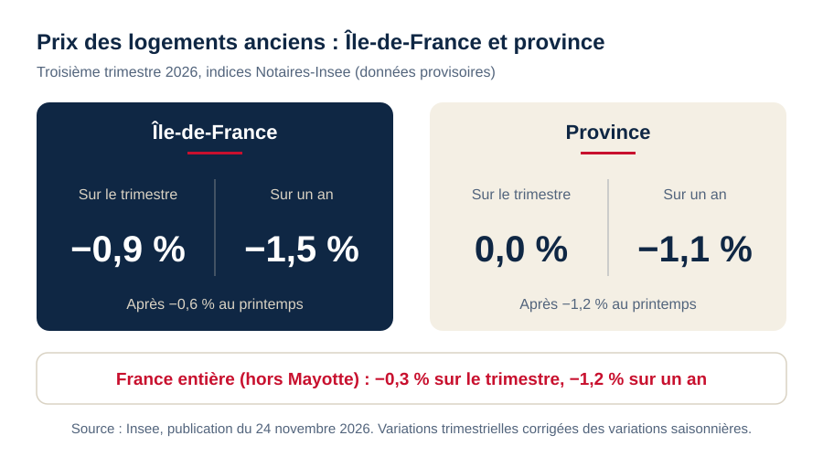

Oui, les prix de l'immobilier ancien baissent, mais faiblement : selon les indices Notaires-Insee publiés le 24 novembre 2026, ils ont reculé de 0,3 % au troisième trimestre 2026 en France (hors Mayotte) et de 1,2 % sur un an. En province, les prix sont restés stables sur le trimestre, et le nombre de ventes se maintient à 956 000 sur douze mois. Voici ce que disent ces chiffres officiels, et ce qu'ils changent pour un vendeur.
Les prix de l'immobilier ancien baissent-ils fin 2026 ?
Ils baissent, à un rythme qui ralentit. Selon l'Insee (publication du 24 novembre 2026), les prix des logements anciens ont perdu 0,3 % au troisième trimestre 2026, après 1,0 % au deuxième trimestre et 0,2 % au premier.
- −0,3 %Prix des logements anciens en France au 3e trimestre 2026, par rapport au trimestre précédent
- −1,2 %Évolution des prix sur un an, au 3e trimestre 2026
- 956 000Ventes de logements anciens sur douze mois, à fin septembre 2026
Sur un an, en revanche, le recul s'accentue : −1,2 %, après −0,8 % au deuxième trimestre et des prix stables au premier. Les deux lectures ne se contredisent pas. La variation trimestrielle montre le mouvement récent ; la variation annuelle additionne quatre trimestres, dont le printemps 2026, où les prix avaient perdu 1,0 %.
Deux précisions de méthode. Ces chiffres sont provisoires : l'Insee les révise quand les dernières ventes sont enregistrées. Et les variations trimestrielles sont « corrigées des variations saisonnières », c'est-à-dire débarrassées des effets habituels du calendrier, pour que deux trimestres soient comparables.
Maisons ou appartements : lesquels baissent le plus ?
Sur un an, les maisons reculent un peu plus que les appartements : −1,3 % contre −1,0 % en France. Sur le seul troisième trimestre, c'est l'inverse : les appartements cèdent 0,4 % et les maisons 0,1 %.
| Type de bien | France, sur le trimestre | France, sur un an | Province, sur un an |
|---|---|---|---|
| Appartements | −0,4 % | −1,0 % | −0,8 % |
| Maisons | −0,1 % | −1,3 % | −1,2 % |
| Ensemble | −0,3 % | −1,2 % | −1,1 % |
Pour donner un ordre de grandeur, 1,2 % représente 2 400 € sur un bien de 200 000 €. C'est un calcul d'illustration, pas une estimation : une moyenne nationale ne dit rien du prix d'une maison précise.
Île-de-France et province : deux marchés qui divergent
La baisse du trimestre vient surtout de l'Île-de-France. Les prix y reculent de 0,9 % en trois mois et de 1,5 % sur un an, alors qu'en province ils sont stables sur le trimestre, après un net recul au printemps (−1,2 %).

En province, tout ne bouge pas de la même façon. Les appartements des agglomérations de plus de 10 000 habitants perdent 1,0 % sur un an. Ceux des petites agglomérations et des communes rurales gagnent 0,5 %, et même 1,0 % sur le seul troisième trimestre.
Une limite à connaître : la publication nationale ne détaille que trois régions de province (Auvergne-Rhône-Alpes, Hauts-de-France, Provence-Alpes-Côte d'Azur). Elle ne donne aucun chiffre pour l'Occitanie, ni pour Béziers, Montpellier, Nîmes, Carcassonne ou Narbonne. La tendance « province » est une moyenne, à ne pas plaquer telle quelle sur une rue de Narbonne ou un village du Biterrois.
Combien de logements se vendent en France ?
Environ 956 000 logements anciens ont changé de propriétaire en douze mois, à fin septembre 2026. Le chiffre était de 959 000 fin juin et de 953 000 fin mars : le marché ne recule plus, il ne repart pas non plus.
- De fin avril 2022 à l'automne 2024, le nombre de ventes a baissé sans interruption.
- D'octobre 2024 à décembre 2025, il s'est redressé.
- Depuis le début de 2026, il se stabilise.
L'Insee rapporte aussi ces ventes au parc existant : elles représentent 2,5 % des logements, un niveau proche de celui des années 2000, loin du point haut du troisième trimestre 2021 (3,3 %). Les acheteurs sont donc bien là, mais le marché tourne moins vite qu'en 2021.
Vous vendez : que faire de ces chiffres ?
Servez-vous-en comme d'un repère d'ambiance, pas comme d'un barème. Quand les prix glissent doucement et que les ventes plafonnent, un bien affiché au-dessus du marché attend ; un bien au bon prix trouve preneur.
- Partez des ventes réellement signées près de chez vous ces derniers mois, pas des prix affichés dans les annonces.
- Regardez depuis quand les biens comparables au vôtre sont en vente : c'est le meilleur indice d'un prix trop haut.
- Réunissez le dossier avant la première visite : diagnostics, DPE, taxe foncière, documents de copropriété.
- Fixez à l'avance votre marge de négociation et le prix en dessous duquel vous ne vendrez pas.
- Faites le point après quelques semaines de visites, plutôt que de laisser l'annonce vieillir.
À Carcassonne comme à Béziers ou à Nîmes, deux biens de même surface peuvent se vendre à des prix très différents selon l'étage, l'état, le stationnement ou l'étiquette énergétique. C'est tout l'intérêt d'une estimation faite sur place.
Quand seront publiés les prochains chiffres ?
Le 25 février 2027 à 8 h 45, date annoncée par l'Insee pour les indices du quatrième trimestre 2026. D'ici là, les chiffres du troisième trimestre peuvent être révisés. Cet article donne des informations générales, arrêtées au 28 novembre 2026 ; il ne constitue ni une prévision ni un conseil personnalisé.
Sources
Questions fréquentes
Les prix de l'immobilier vont-ils continuer à baisser en 2027 ?
Personne ne peut le dire avec certitude. Les indices Notaires-Insee montrent une baisse de 1,2 % sur un an au troisième trimestre 2026, mais un recul trimestriel limité à 0,3 %, et des prix stables en province. Les prochains chiffres, ceux du quatrième trimestre 2026, sont annoncés pour le 25 février 2027.
Que mesurent les indices Notaires-Insee ?
Ils mesurent l'évolution des prix des logements anciens à partir des ventes réalisées au cours du trimestre. Selon l'Insee, la méthode estime le prix d'un logement en fonction de ses caractéristiques, puis la valeur d'un parc de logements de référence aux prix du moment. Les derniers chiffres publiés sont provisoires et peuvent être révisés.
Les prix baissent-ils à Carcassonne, à Narbonne ou à Béziers ?
La publication nationale de l'Insee du 24 novembre 2026 ne donne pas de chiffre pour ces villes, ni pour l'Occitanie. Elle indique seulement qu'en province les prix sont stables sur le troisième trimestre 2026 et en baisse de 1,1 % sur un an, en moyenne. Pour un bien précis, seules les ventes récentes du secteur permettent de se faire une idée juste.
Faut-il baisser son prix de vente quand les prix reculent ?
Pas automatiquement. Une baisse nationale de 1,2 % sur un an reste modeste et ne s'applique pas de la même façon partout. Le bon repère est le prix des ventes récentes de biens comparables près de chez vous ; si les visites sont rares après quelques semaines, c'est le moment d'en reparler avec votre conseiller.
Cet article donne des repères généraux et ne remplace pas un conseil personnalisé. Les règles évoluent : demandez à un conseiller de vérifier votre situation.
Un projet de vente ?
Un conseiller estime votre bien en s'appuyant sur les ventes récentes de votre quartier.